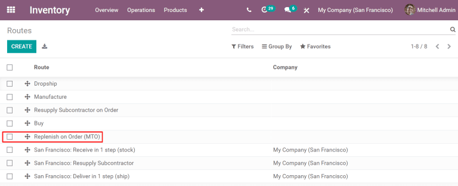

Reabastecer sobre pedido (MTO)¶
Reabastecer sobre pedido, también conocida como fabricación sobre pedido (MTO, por sus siglas en inglés), es una estrategia de reabastecimiento que crea una orden de fabricación para un producto cada vez que se crea una orden de venta para el mismo. Mientras que para los productos que se compran a un proveedor se crea una cotización, para una orden de venta de un producto de fabricación se crea una orden de fabricación. La creación de una cotización o de una orden de fabricación se produce cada vez que se crea una orden de venta, independientemente del nivel actual de existencias del producto solicitado.
Desarchivar la ruta de reabastecer sobre pedido (MTO)¶
De forma predeterminada, Odoo establece la ruta MTO como archivada. Esto se debe a que MTO es un flujo de trabajo de nicho que solo es utilizado por ciertas empresas. Sin embargo, es fácil desarchivar la ruta.
Para ello, vaya a . En la página Rutas, haga clic en el botón Filtros y seleccione la opción Archivadas. Esto muestra todas las rutas que están archivadas.

Habilite la casilla junto a Reabastecer sobre pedido (MTO), luego haga clic en el botón Acción para abrir el menú desplegable y allí seleccione Desarchivar.

Por último, elimine el filtro Archivado de la barra de búsqueda. La página rutas mostrará todas las rutas disponibles, entre ellas Reabastecer sobre pedido (MTO), que ahora se puede seleccionar en la pestaña de inventario en la página de cada producto.
Configurar un producto para usar la ruta MTO¶
Con la ruta MTO desarchivada, ahora puede configurar de forma adecuada los productos para que usen reabastecer sobre pedido. Vaya a , luego seleccione un producto existente o haga clic en Crear para configurar uno nuevo.
En la página del producto, seleccione la pestaña Inventario y habilite la ruta Reabastecer sobre pedido (MTO) en la sección Rutas, junto con otra ruta.
Importante
La ruta Reabastecer sobre pedido (MTO) no funciona a menos que también seleccione otra ruta. Esto se debe a que Odoo necesita saber cómo reabastecer el producto cuando se realiza una orden (comprarlo, fabricarlo, etc.).
Si compra este producto a un proveedor para cumplir con las órdenes de venta, active la casilla Se puede comprar debajo del nombre del producto. Esto hace que la pestaña Compra aparezca junto a las otras pestañas de ajustes.
Seleccione la pestaña Compra, especifique un proveedor y el precio al cual venden el producto.

Si el producto se fabrica, asegúrese de que tiene una lista de materiales (LdM) configurada. Haga clic en el botón inteligente Lista de materiales en la parte superior de la pantalla, luego haga clic en Crear en la página lista de materiales para configurar una para el producto.
En el formulario de la lista de materiales en blanco, agregue los componentes que se utilizan para fabricar el producto en la pestaña Componentes y las operaciones necesarias para el flujo de trabajo de fabricación en la pestaña Operaciones .
Por último, haga clic en guardar.
Completar una orden de cliente utilizando la ruta MTO¶
Tras configurar un producto para que utilice la ruta MTO, se crea una orden de reabastecimiento para él cada vez que se confirma una orden de venta que incluye el producto. El tipo de orden creada depende de la segunda ruta seleccionada aparte de MTO.
Por ejemplo, si Comprar fue la segunda ruta seleccionada, entonces se crea una orden de compra tras la confirmación de una orden de venta.
Importante
Cuando la ruta MTO está activada para un producto, siempre se crea una orden de reabastecimiento tras la confirmación de una orden de venta. Esto es así incluso si hay suficientes existencias disponibles del producto para cumplir con la orden de venta, sin necesidad de comprar o fabricar unidades.
Aunque la ruta MTO se puede utilizar junto con otras rutas, la ruta Comprar se utiliza como ejemplo para este flujo de trabajo. Para empezar, vaya a la aplicación y haga clic en Crear, esto abre un nuevo formulario de cotización.
En el formulario de cotización, añada un cliente, haga clic en Agregar producto en la pestaña Líneas de la orden e introduzca un producto que se haya configurado para utilizar las rutas MTO y Compras. Haga clic en Confirmar y la cotización se convertirá en una orden de venta.
Aparecerá un botón inteligente de Compra en la esquina superior derecha de la orden de venta. Al hacer clic en él, se abrirá la cotización asociada a la orden de venta.
Haga clic en Confirmar orden para confirmar la |cotización| y convertirla en una orden de compra. Aparecerá un botón verde de Recibir productos en la parte superior de la orden de compra. Una vez recibidos los productos, haga clic en Recibir productos para registrarlos en el inventario.
Vuelva a la orden de venta haciendo clic en las migas de pan de la orden de venta, o en , y seleccione la orden de venta.
Por último, haga clic en el botón inteligente Entrega en la parte superior derecha de la orden para acceder a la orden de entrega. Una vez enviados los productos al cliente, haga clic en Validar para confirmar la entrega.